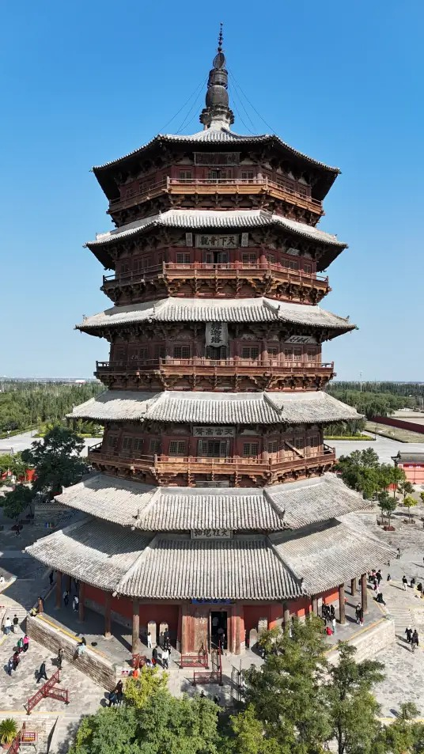

应县木塔 |
返回主页 |  | |
| 佛宫寺释迦塔（Pagoda of Fogong Temple），又称应县木塔，位于山西省朔州市应县佛宫寺内，始建于辽清宁二年（1056年），是世界上现存最高大、最古老纯木结构楼阁式建筑，与意大利比萨斜塔、巴黎埃菲尔铁塔并称“世界三大奇塔” 。 佛宫寺释迦塔高67.31米，底部直径30.27米，总重量为7400多吨，主体使用材料为华北落叶松，斗拱使用榆木。木料用量多达上万立方米。整个建筑由塔基、塔身、塔刹三部分组成，塔基又分作上、下两层，下层为正方形，上层为八角形。塔身呈现八角形，外观五层六檐，实为明五暗四九层塔 。佛宫寺释迦塔是现存世界木结构建设史上较典型的实例，中国建筑发展上较有价值的坐标，抗震避雷等科学领域研究的知识宝库，考证一个时代经济文化发展的一部“史典” 。 1961年3月4日，佛宫寺释迦塔被中华人民共和国国务院公布为第一批全国重点文物保护单位 。 | |||